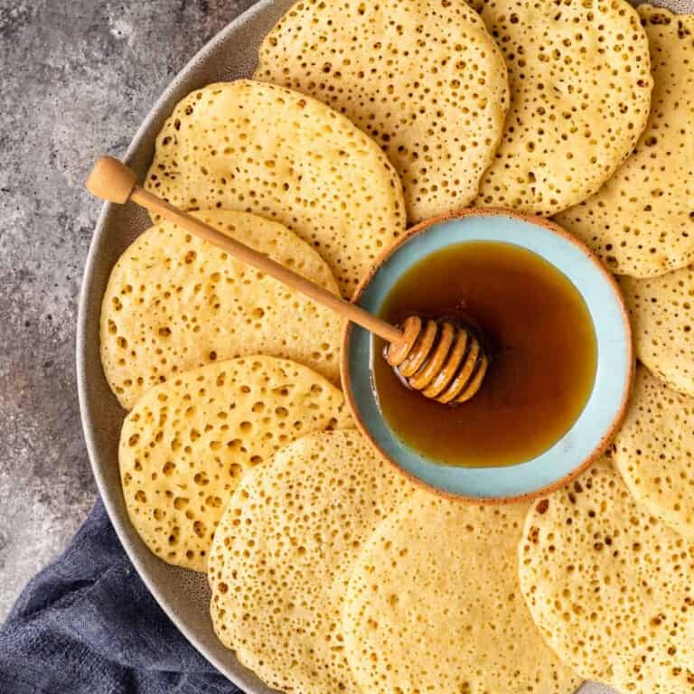

THE BAGHRIR RECIPE

a small image indicating what baghrir looks like
Baghrir, also known as "Thousand Hole Pancakes" or "Moroccan Pancakes," is a delicious Moroccan pancake made with semolina and served with honey and butter. These pancakes are known for their unique texture, which features a spongy top and lots of tiny holes on the bottom.
Here's how you can make them:
Ingredients
For the baghrir butter:
- 1 cup fine semolina
- 1/2 cup all-purpose flour
- 1 teaspoon active dry yeast
- 1 teaspoon sugar
- 1/2 teaspoon salt
- 3/2 cups warm water
For cooking
- Vegetable oil or butter for greasing the pan
For serving:
Steps
- In a small bowl, mix the warm water, sugar, and yeast. Allow it to sit for about 5-10 minutes until the yeast is frothy.
- In a blender or food processor, combine the semolina, all-purpose flour, and salt. Gradually add the yeast mixture while blending until you have a smooth batter. The batter should be quite thin, similar to the consistency of crepe batter.
- Let the baghrir batter rest for 30 minutes to 1 hour. This resting period allows the batter to ferment and develop the characteristic holes.
- Heat a non-stick skillet or a griddle over medium-low heat. You don't need to add any oil or butter to the pan.
- Pour a small ladleful of the batter onto the skillet, using a circular motion to spread it out. The pancake should be thin and about 6-8 inches in diameter. You will notice bubbles forming on the surface of the pancake, and it should start to set within a minute or two.
- Baghrir is cooked only on one side. Once you see that the surface is set, and there are many small holes all over (this is the characteristic texture), remove it from the pan. There's no need to flip it over.
- Continue making baghrir pancakes, making sure not to stack them on top of each other while they're still hot, as they might stick together.
- Serve the baghrir pancakes hot, drizzled with honey and a little melted butter. They're best enjoyed fresh and warm.
Baghrir is a delightful treat, and it's perfect for breakfast or as a snack. The honey and butter toppings add a lovely sweetness that complements the unique texture of the pancakes. Enjoy!
For more recipes , visit those links :
Return to the main page